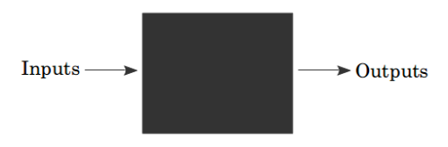
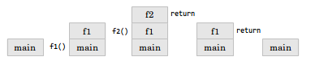

함수(function)는 0개 이상의 입력 매개변수를 0개 이상의 출력 매개변수로 매핑하는 독립적인 코드 영역이다. 함수(프로시저나 서브루틴으로도 알려진)는 블랙 박스로 자주 표현되기도 한다(블랙 박스는 함수를 나타낸다).

지금까지 Go로 작성한 프로그램에서는 단 하나의 함수만을 사용했다.
func main() {}
이제부터 함수를 하나 이상 사용하는 프로그램을 작성하겠다.
6장에서 작성한 다음 프로그램을 보자.
func main() {
xs := []float64{98,93,77,82,83}
total := 0.0
for _, v := range xs {
total += v
}
fmt.Println(total / float64(len(xs)))
}
이 프로그램은 숫자의 평균을 계산한다. 이처럼 평균을 구하는 것은 굉장히 일반적인 문제이므로 함수로 정의하기에 안성맞춤이다.
average 함수에서는 float64의 슬라이스를 받아 float64를 반환할 필요가 있다. 이 함수를 main 함수 앞에 집어넣는다.
func average(xs []float64) float64 {
panic("Not Implemented")
}
함수는 func라는 키워드로 시작해 이어서 함수의 이름이 나온다. 함수의 매개변수(입력)는 이름 타입, 이름 타입, ...과 같은 식으로 정의된다. 여기서 작성한 함수는 xs라는 이름의 매개변수 하나만 받는다. 매개변수가 끝나면 반환형을 지정한다. 매개변수와 반환형을 총칭해서 함수의 함수의 서명(signature)이라 한다.
마지막으로 중괄호 사이에 위치하는 문장의 나열인 함수 본문이 있다. 함수 본문에서는 panic이라는 내장 함수를 호출하는데, 이 함수는 런타임 오류를 일으킨다(이후 장에서 패닉에 관해 좀 더 살펴보겠다). 함수를 작성하는 일은 어려울 수도 있으므로 한 번에 전체 작업을 구현하려 하기보다는 절차를 관리 가능한 덩어리로 나누는 것이 좋다.
이제 main 함수의 코드를 average 함수로 옮겨보자.
func average(xs []float64) float64 {
total := 0.0
for _, v := range xs {
total += v
}
return total / float64(len(xs))
}
여기서 fmt.Println을 return으로 변경한 부분을 눈여겨보자. 반환문은 함수가 즉시 실행을 중단하고 해당 함수를 호출한 함수로 값을 반환하게 한다. main 함수를 다음과 같이 수정한다.
func main() {
xs := []float64{98,93,77,82,83}
fmt.Println(average(xs))
}
이 프로그램을 실행하면 원래 코드와 정확히 같은 결과를 출력할 것이다. 몇 가지 염두에 둘 사항은 다음과 같다.
매개변수의 이름은 해당 함수를 호출하는 함수의 매개변수와 일치하지 않아도 된다. 예를 들어, 프로그램을 다음과 같이 작성해도 된다.
func main() {
someOtherName := []float64{98,93,77,82,83}
fmt.Println(average(someOtherName))
}
이렇게 하더라도 프로그램은 여전히 동작할 것이다.
함수는 해당 함수를 호출하는 함수에 들어 있는 것에 접근할 수 없다. 다음 코드는 동작하지 않는다.
func f() {
fmt.Println(x)
}
func main() {
x := 5
f()
}
대신 다음과 같이 작성하거나
func f(x int) {
fmt.Println(x)
}
func main() {
x := 5
f(x)
}
다음과 같이 작성해야 한다.
var x int = 5
func f() {
fmt.Println(x)
}
func main() {
f()
}
함수는 "스택(stack)" 상에 만들어진다. 다음과 같은 프로그램이 있다고 해보자.
func main() {
fmt.Println(f1())
}
func f1() int {
return f2()
}
func f2() int {
return 1
}
이를 다음과 같이 시각화할 수 있다.

함수를 호출할 때마다 함수를 호출 스택에 집어넣고 함수에서 반환될 때마다 스택에서 마지막 함수를 꺼낸다.
반환형의 이름을 지정할 수도 있다.
func f2() (r int) {
r = 1
return
}
Go에서는 한 함수에서 여러 값을 반환할 수도 있다.
func f() (int, int) {
return 5, 6
}
func main() {
x, y := f()
}
여러 값을 반환하려면 세 가지를 변경해야 한다. 먼저 반환형이 ,를 기준으로 여러 개의 값을 담도록 수정하고, 반환문 이후의 수식을 수정해 ,를 기준으로 여러 개의 수식을 담도록 수정하며, 마지막으로 다중값이 :=나 =의 왼쪽에 오도록 할당문을 수정한다.
다중값은 결과값과 함께 오류 값을 반환하거나(x, err := f()) 성공을 나타내는 불린값을 반환(x, ok := f())하는 데 자주 사용된다.
Go 함수의 마지막 매개변수에 사용할 수 있는 특별한 형태가 있다.
func add(args ...int) int {
total := 0
for _, v := range args {
total += v
}
return total
}
func main() {
fmt.Println(add(1,2,3))
}
마지막 매개변수의 타입명 앞에 …를 사용해 해당 함수가 0개 이상의 매개변수를 받는다는 것을 나타낼 수 있다. 이 경우 0개 이상의 int를 받는다. int 값을 원하는 만큼 전달할 수 있다는 사실을 제외하면 다른 함수와 똑같은 방식으로 호출한다.
다음은 fmt.Println 함수가 정확히 어떻게 구현돼 있는지 보여준다.
func Println(a ...interface{}) (n int, err error)
Println 함수는 어떤 타입의 값을 임의 개수만큼 받아들인다(특별한 interface{} 타입은 9장에서 좀 더 자세히 살펴보겠다).
아울러 다음과 같이 ...가 포함된 슬라이스를 통해 int의 슬라이드를 전달할 수도 있다.
func main() {
xs := []int{1,2,3}
fmt.Println(add(xs...))
}
함수 안에 함수를 만드는 것도 가능하다.
func main() {
add := func(x, y int) int {
return x + y
}
fmt.Println(add(1,1))
}
add는 타입이 func(int, int)int인(두 개의 int를 받아 int를 반환하는 함수) 지역 변수다. 이런 식으로 지역 함수를 생성할 경우 다른 지역 변수에도 접근할 수 있다(4장에서 다룬 유효 범위를 떠올려보라).
func main() {
x := 0
increment := func() int {
x++
return x
}
fmt.Println(increment())
fmt.Println(increment())
}
increment는 main 함수의 유효범위 안에 정의돼 있는 변수 x에 1을 더한다. 이 x 변수는 increment 함수에서 접근하거나 수정할 수 있다. 이는 처음으로 increment를 호출했을 때 1이 출력되지만 두 번째로 호출했을 때는 2가 출력되기 때문이다.
이 같은 함수와 해당 함수가 참조하는 비지역 변수를 포함해서 클로저(closure)라 한다. 이 경우 increment와 변수 x가 클로저를 형성한다.
클로저를 사용하는 한 방법은 호출됐을 때 숫자의 나열을 생성할 수 있는 또 다른 함수를 반환하는 함수를 작성하는 것이다. 예를 들어, 다음 예제는 짝수를 생성하는 방법을 보여준다.
func makeEvenGenerator() func() uint {
i := uint(0)
return func() (ret uint) {
ret = i
i += 2
return
}
}
func main() {
nextEven := makeEvenGenerator()
fmt.Println(nextEven()) // 0
fmt.Println(nextEven()) // 2
fmt.Println(nextEven()) // 4
}
makeEvenGenerator는 짝수를 만들어 내는 함수를 반환한다. 해당 함수를 호출할 때마다 지역 변수 i(평범한 지역 변수와 달리 호출되더라도 값이 지속되는)에 2를 더한다.
마지막으로 함수는 자기 자신을 호출할 수 있다. 다음은 숫자의 팩토리얼을 계산하는 한 방법이다.
func factorial(x uint) uint {
if x == 0 {
return
}
return x * factorial(x-1)
}
factorial은 자기 자신을 호출하는데, 이를 통해 이 함수가 재귀적인 성질을 띤다. 이 함수의 동작 방식을 더 잘 이해하기 위해 factorial(2)가 동작하는 과정을 따라가 보자.
* x == 0인가? (x는 2)
* x - 1의 팩토리얼을 구한다
* x == 0인가? (x는 1)
* x - 1의 팩토리얼을 구한다
* x == 0인가? 그렇다. 1을 반환한다.
* 1 * 1을 반환한다
* 2 * 1을 반환한다
클로저와 재귀는 함수형 프로그래밍으로 알려진 패러다임의 근간을 이루는 강력한 프로그래밍 기법이다. 대부분의 사람들은 함수형 프로그래밍이 반복문, if 문, 변수와 간단한 함수를 기반으로 하는 접근법에 비해 더 이해하기 어렵다는 사실을 발견하게 될 것이다.
Go에는 defer라고 하는 특별한 구문이 있는데, 이것은 해당 함수가 실행을 완료했을 때 실행을 위해 호출 스케줄을 잡는다. 다음 프로그램을 보자.
package main
import "fmt"
func first() {
fmt.Println("1st")
}
func second() {
fmt.Println("2nd")
}
func main() {
defer second()
first()
}
이 프로그램은 1st를 출력한 후 이어서 2nd를 출력한다. 기본적으로 지연은 second에 대한 호출을 해당 함수의 끝으로 옮긴다.
func main() {
first()
second()
}
defer는 어떤 식으로든 자원을 해제해야 할 때 자주 사용된다. 예를 들어, 파일을 열 때 나중에 해당 파일을 반드시 닫아야 한다. defer를 이용하면 다음과 같이 하면 된다.
f, _ := os.Open(filename) defer f.Close()
이 방법에는 세 가지 장점이 있다. (1) Close 호출을 Open 호출 가까이에 둬서 이해하기가 쉽고, (2) 함수에 반환문이 여러 개 있더라도(if에 하나가 들어 있고, else에 하나가 들어 있는 것처럼) Close가 두 반환문 앞에서 모두 호출될 것이며, (3) 지연된 함수는 런타임 패닉이 일어나더라도 실행될 것이다.
앞에서 panic 함수를 호출해 런타임 오류를 일으키는 함수를 만들었다. Go에 내장된 recover 함수를 이용하면 런타임 패닉을 처리할 수 있다. recover는 패닉을 중단하고 panic 호출에 전달된 값을 반환한다. recover를 다음과 같은 식으로 사용하고 싶을지도 모르겠다.
package main
import "fmt"
func main() {
panic("PANIC")
str := recover()
fmt.Println(str)
}
하지만 이 경우 recover는 절대 호출되지 않을 텐데, panic에 대한 호출이 즉시 함수 호출을 중단할 것이기 때문이다. 대신 defer와 짝을 맞춰야 한다.
package main
import "fmt"
func main() {
defer func() {
str := recover()
fmt.Println(str)
}()
panic("PANIC")
}
일반적으로 패닉은 프로그래밍 오류를 나타내거나(가령 범위를 벗어난 배열 인덱스에 접근하려고 시도하거나 맵을 초기화하는 것을 잊어버리는 등) 손쉽게 복구할 수 없는 예외적인 상황을 나타낸다(그래서 "패닉"이라고 하는 것이다).
sum은 숫자 슬라이스를 받아 그것들을 모두 합하는 함수다. Go에서 이 함수의 서명은 어떻게 될 것인가?half(1)은 (0, false)을 반환해야 하고 half(2)는 (1, true)를 반환해야 한다.makeEvenGenerator를 예제로 삼아 홀수를 생성하는 makeOddGenerator 함수를 작성하라.fib(0) = 0, fib(1) = 1, fib(n) = fib(n-1) + fib(n-2)로 정의된다. fib(n)를 구할 수 있는 재귀 함수를 작성하라.| ← 이전 | 홈 | 다음 → |